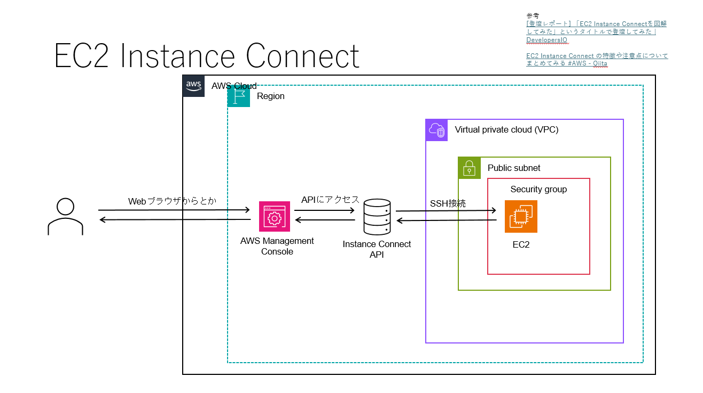
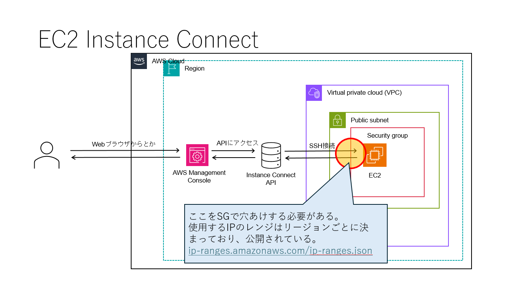
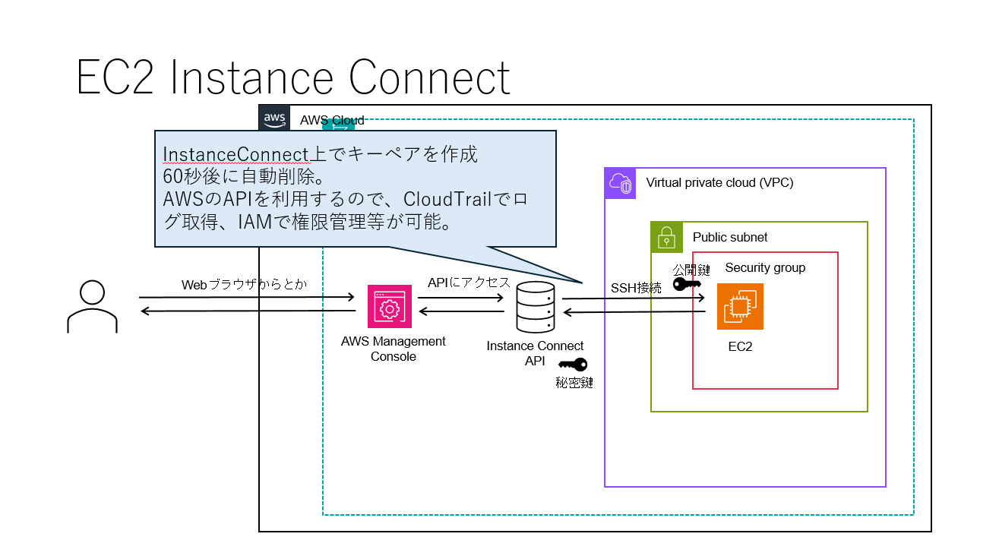
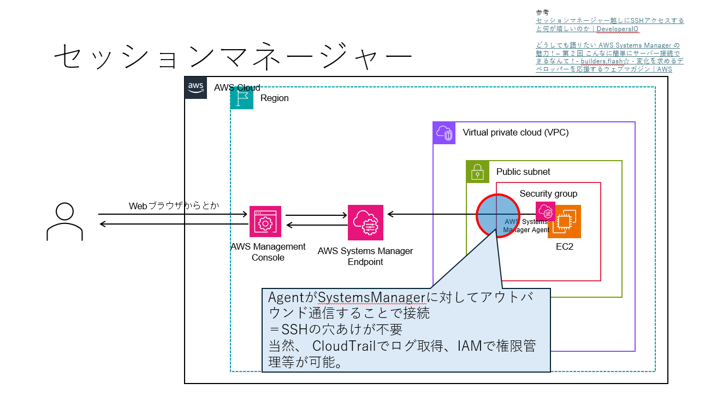
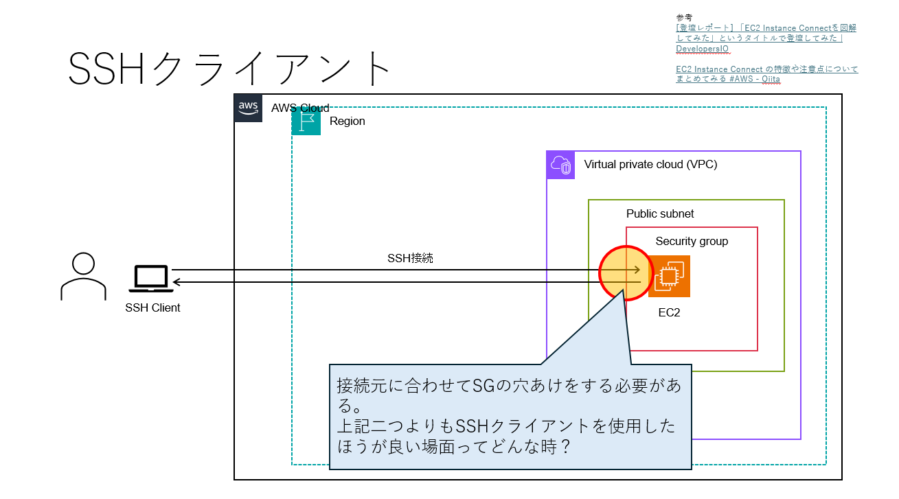

EC2インスタンス接続方法整理¶
接続方法¶
EC2インスタンスへの接続方法は以下の4パターン
#.EC2 Instance Connect
#.セッションマネージャ
#.SSHクライアント
#.EC2シリアルコンソール
EC2 InstanceConnect¶
  
ロール付与＆SG穴あけさえすれば簡単に接続可能。
SSHクライアント接続とは異なり、SSHキーを共有及び管理する必要が無い＆CloudTrailでのログ管理やIAMでの権限管理が可能。
セッションマネージャ¶

SSM Agentのアウトバウンド通信を利用して接続≠SSH接続
⇒OSの観点でログが残らない。
当然、CloudTrailでのログ管理やIAMでの権限管理が可能。
SSHクライアント¶

ローカルのSSHクライアント（Teratermとか）を使って接続
接続元に合わせてSGの穴あけが必要。